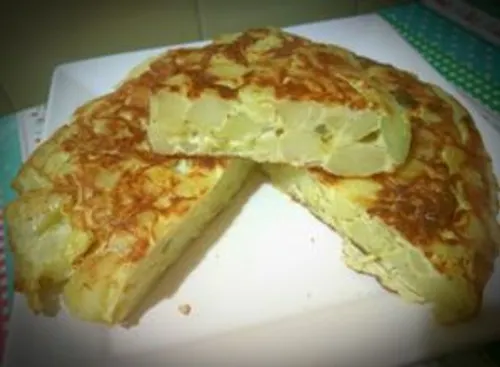
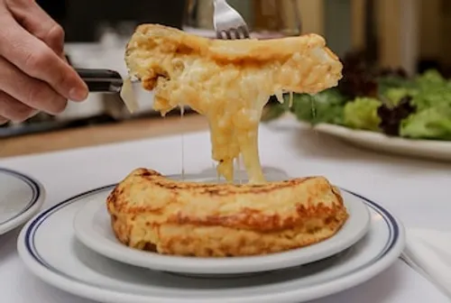

Tortilla de patatas
Receta tortilla de patatas
- Pela las patatas y cortalas en rodajas finas o dados pequeños. Si usas cebolla, córtala en juliana fina o trozos pequeños.
- En una sartén honda, añade abundante aceite de oliva a fuego medio-bajo. Agrega las patatas y la cebolla. Cocina suavemente durante 15–20 minutos hasta que las patatas estén muy tiernas y comiencen a deshacerse, pero sin llegar a dorarse en exceso.
- Con una espumadera, saca las patatas y la cebolla escurriendo bien el aceite. Transfiérelas a un bol grande y añade sal al gusto.
- En otro recipiente, bate los huevos con una pizca de sal. Vierte los huevos batidos sobre las patatas calientes y mezcla bien. Deja reposar la mezcla durante unos 5 minutos para que la patata absorba el huevo y se unifiquen los sabores.
- Retira la mayor parte del aceite de la sartén, dejando solo una fina capa, y caliéntala a fuego medio. Vierte la mezcla de patata y huevo. Cocina durante 3–4 minutos, removiendo ligeramente los bordes para darle forma redondeada.
- Coloca un plato llano más grande que la sartén sobre esta. Con un movimiento firme y decidido, dale la vuelta a la sartén sobre el plato.
- Desliza la tortilla de nuevo en la sartén para cuajar la otra cara. Déjala entre 1 y 3 minutos adicionales, según si la prefieres poco hecha o bien cuajada.
- Pásala a un plato y déjala reposar unos minutos antes de servir.

